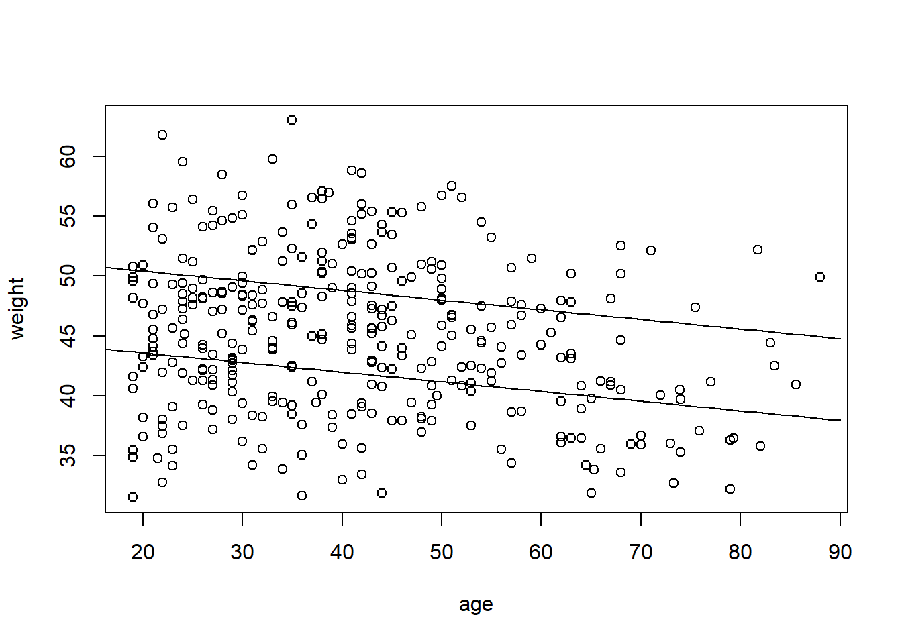

Use McElreath’s dataset Howell2 restricted to adults (age > 18). Fit two linear models using quadratic approximation, quap():
Weight as outcome, with two predictors: sex as an indicator variable and age as a continuous variable.
As above, but allow for a curvilinear effect of age, by adding age-squared to the model. Center the age variable around its mean.
For the first model, motivate priors based on a prior predictive simulation (cf. Fig. 4.5 of the Book). Then fit the model and report regression coefficients with compatibility intervals, and illustrate model predictions in a plot of the data (weight as a function of non-centered age) with separate prediction lines for women and men. Include compatibility regions around fitted lines (e.g., as in Fig. 5.1 of the book) or add samples of fitted lines (e.g., as in Fig. 4.7).
data("Howell1")d <- Howell1d <- d[d$age >18,]xbar <-mean(d$age)d$sex <-ifelse(d$male ==1, 2,1)#1. first model, adding age and sexmdl1 <-quap(alist( weight ~dnorm(mu,sigma), mu <- a[sex] + beta_age*(age-xbar), a[sex] ~dnorm(178,20), #this is a common prior. With dummy variables parametrised we could two priors instead. beta_age ~dnorm(0,1), sigma ~dexp(1) ), data = d)precis(mdl1, depth =2)
#plot itcoffs <-precis(mdl1, depth =2)[,1]{plot(weight ~ age, data = d)curve(from =-30, to =90, coffs[1] + coffs[3]*(x-xbar), add =TRUE)curve(from =-30, to =90, coffs[2] + coffs[3]*(x-xbar), add =TRUE)}

Comment from the seminar: When we use dummy coding that means we compound uncertainty, because while female height has one prior, male height is the combination of two priors
As above, but allow for a curvilinear effect of age, by adding age-squared to the model. Center the age variable around its mean.
For the first model, motivate priors based on a prior predictive simulation (cf. Fig. 4.5 of the Book). Then fit the model and report regression coefficients with compatibility intervals, and illustrate model predictions in a plot of the data (weight as a function of non-centered age) with separate prediction lines for women and men. Include compatibility regions around fitted lines (e.g., as in Fig. 5.1 of the book) or add samples of fitted lines (e.g., as in Fig. 4.7).
Did not figure out how to connect extract.prior() with link() here…
data("Howell1")d <- Howell1d <- d[d$age >18,]xbar <-mean(d$age)d$sex <-ifelse(d$male ==1, 2,1)mdl1 <-quap(alist( weight ~dnorm(mu,sigma), mu <- a + beta_age*(age-xbar), a ~dnorm(178,20), beta_age ~dnorm(0,1), sigma ~dexp(1) ), data = d)prior <-extract.prior(mdl1){plot(NULL,xlim=c(18,90),ylim=c(0,300))for (i in1:50) abline(a = prior$a[i], b = prior$beta_age[i])}
I’d say 2 and 4. I don’t know what 3 is. Looks cursed. The result though, seems to be a simple linear regression on a new variable computed from the pairs. The second one doesn’t have an intercept, which is often dumb but can be justified under some circumstances.
SR5E2
Write down a multiple regression to evaluate the claim: “Animal diversity is linearly related to latitude, but only after controlling for plant diversity”. You just need to write down the model definition.
Answer: So linearly related after controlling for plant diversity. I’d assume then that plant diversity is a cause we should control for. If we make a DAG, plant diversity can’t “cause” latitude. Here \(A\) stands for animal diversity. \(L\) stands for latitude. \(P\) stands for plant diversity.
L –> A
L –> P –> A
If we control for P we block that path into A, estimating only the direct path from L to A. Maybe like that?
Write down a multiple regression to evaluate the claim: Neither amount of funding nor size of laboratory is by itself a good predictor of time to PhD degree; but together these variables are both positively associated with time to degree. Write down the model definition and indicate which side of zero each slope parameter should be on.
Answer:\(F\) is amount of funding. \(L\) is laboratory size. \(T\) is time to degree. I assume we need many regressions to evaluate the claim?